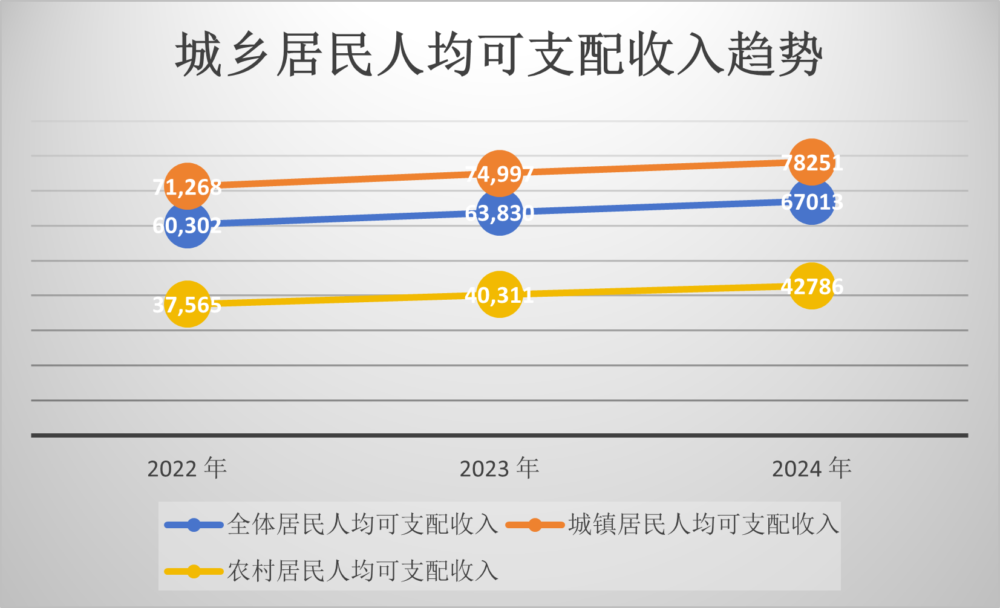
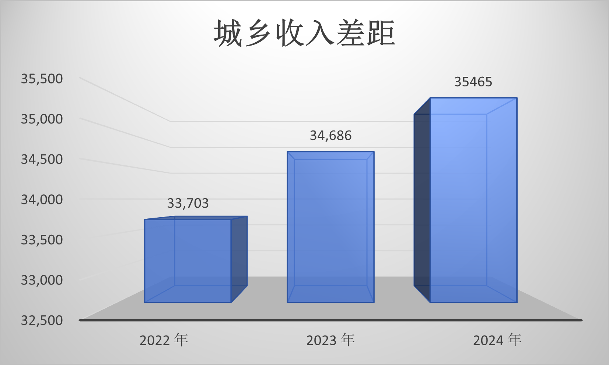
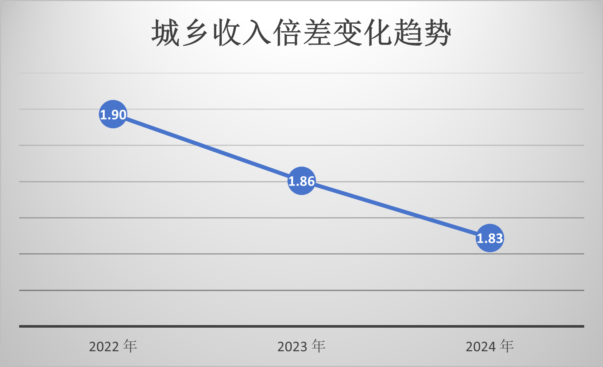
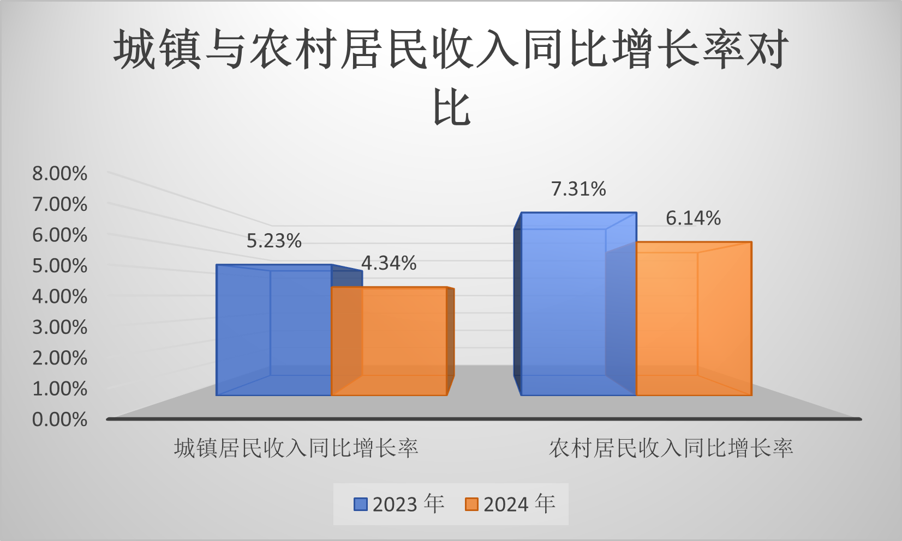
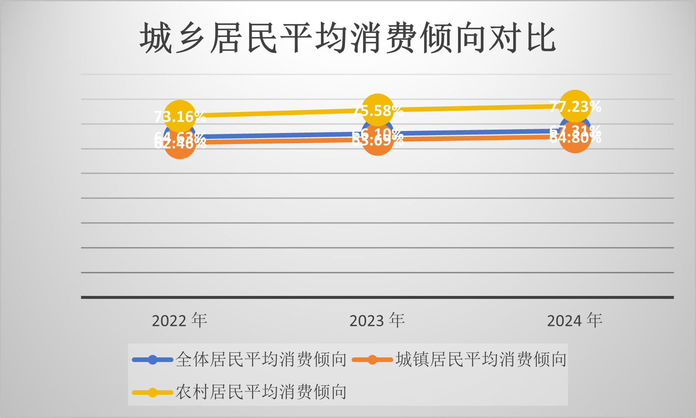

本项目基于浙江省统计局统计年鉴数据，使用 Excel 和 MySQL 对浙江省全体居民、城镇常住居民和农村常住居民的人均可支配收入、城乡收入差距、收入倍差、收入结构和平均消费倾向进行分析。
本项目围绕浙江省2022—2024年城乡居民人均可支配收入展开，主要使用 Excel 完成数据整理、指标计算和 Dashboard 看板制作，并使用 MySQL 完成数据库建模、SQL 查询和分析验证。
项目重点分析居民收入增长趋势、城镇与农村居民收入差距、城乡收入倍差变化、收入来源结构以及居民平均消费倾向。
| 年份 | 全体居民收入 | 城镇居民收入 | 农村居民收入 | 城乡收入差距 | 城乡收入倍差 |
|---|---|---|---|---|---|
| 2022 | 60,302元 | 71,268元 | 37,565元 | 33,703元 | 1.90 |
| 2023 | 63,830元 | 74,997元 | 40,311元 | 34,686元 | 1.86 |
| 2024 | 67,013元 | 78,251元 | 42,786元 | 35,465元 | 1.83 |
以下图表来自 Excel Dashboard，用于展示收入趋势、城乡收入差距、城乡收入倍差、同比增长率和平均消费倾向。

城乡居民人均可支配收入趋势

城乡收入差距

城乡收入倍差变化趋势

城镇与农村居民收入同比增长率对比

城乡居民平均消费倾向对比
注意：如果图片不能显示，请检查 images 文件夹中的图片文件名是否与 index.html 中的文件名完全一致。GitHub Pages 对路径和文件名大小写比较敏感。
2022—2024年，浙江省全体居民、城镇常住居民和农村常住居民人均可支配收入均保持增长。城镇居民收入水平仍高于农村居民，但城乡收入倍差由2022年的1.90下降到2024年的1.83，说明城乡收入相对差距有所缩小。
从同比增长率看，农村居民收入增速连续高于城镇居民，是城乡收入倍差下降的重要原因。从消费倾向看，农村居民平均消费倾向高于城镇居民，说明农村居民生活消费支出占收入比例更高，收支结余空间相对较小。
当前项目核心数据时间范围为2022—2024年，属于近三年分析。如果后续需要扩展为“近五年”分析，需要继续补充2020年和2021年的对应数据。
后续可以进一步加入地区生产总值、人均GDP、城镇化率、就业数据等指标，也可以使用 Python、Power BI 或 Tableau 提升数据处理自动化和可视化效果。